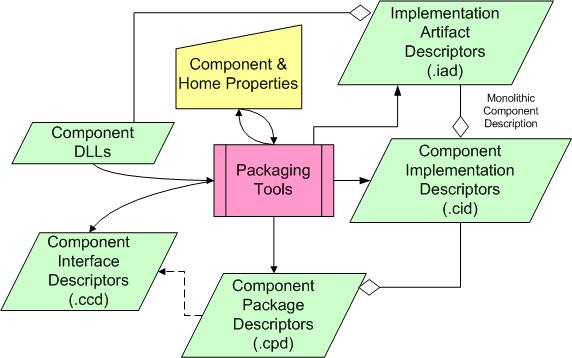

Step 3:
Package your components

Brief Introduction to CosMIC:
The
Component Synthesis using Model Integrated Computing (CoSMIC)
project is a MDA toolset being developed by the Institute for Software
Integrated Systems (ISIS) at
1. Model and analyze distributed real-time and embedded application functionality and QoS requirements.
2. Synthesize CCM-specific deployment metadata required to deliver end-to-end QoS to DRE applications.
The CoSMIC toolsuite provides modeling of DRE systems, their QoS requirements, and QoS adaptation policies used for DRE application QoS management. The component behavior, their interactions, and QoS requirements are modeled using a domain specific modeling language that adheres to the OMG Deployment & Configuration (D&C) specification (ptc/2003-07-08). CoSMIC enables modeling the standards-based CCM components.
Hand-writing the required XML descriptors to configure our components is tedious and error prone. We therefore utilize CosMIC (we specifically use a subset of CosMIC called PICML, which stands for Platform-Independent Component Modeling Language) to generate the bulk of descriptors for us.
For more information on CosMIC, please refer to the following article:
CoSMIC:
An MDA Generative Tool for Distributed Real-time and Embedded Applications.
Importing IDL to PICML
To quick start our Stock Quoter modeling
process in GME, CoSMIC introduces idl_to_picml , which is an
executable program that imports the IDL files you just created into PICML.
- Make sure
%COSMIC_ROOT%\binis included in the PATH variable, e.g., c:\Program Files\ISIS\CoSMIC\bin. - Open a command prompt,
run VCVARS32.BAT from the MSVC .NET folder if you haven't done so. It will
set the environment for using Microsoft Visual Studio .NET tools so that idl_to_picml works properly.
in my machine, VCVARS32.bat is in C:\Program Files\Microsoft Visual Studio .NET 2003\Vc7\bin - In the same command
prompt, change directory to
MyQuoter\, and type the following command:
> idl_to_picml -x MyQuoter -r . -I .\Stock_Base
(if the above command does not work, you may also try this
>idl_to_picml -x MyQuoter -r . -I .\Stock_Base -I %TAO_ROOT% -I %TAO_ROOT%\orbsvcs -I %CIAO_ROOT%\ciao)
idl_to_picml will parse your IDL files and generated aMyQuoter.xmefile in theMyQuoterdirectory. Note that if -x option is not used, the default xme file name will bePICML_default_xme_file.xme.
4. Start GME, select File->Import xml.., and choose the xme file just generated. You should be able to see an imported PICML model similar to the one shown in Figure 2.

Figure 2
In the Browser of the generated model, the PredefinedTypes folder contains a bunch of atomic datatype elements that will be referenced by other modeling
parts later. You don't have to worry about them for now. The models in InterfaceDefinitions folder are the PICML
representations ofthe IDL files you just imported.
Double-click to open Broker, it will show you a white, document-like
entity which represents a <<FileRef>>
instance and a yellow box-shaped entity representing a <<Package>>
instance. Their equivalent representations in IDL files are
"#include" and "module" respectively. Figure 3 gives you a
clear view of GME representation of all the 3 idl
files created. We will cover the other folders in the next section.

Figure 3
Now
we are ready to model the rest of the Stock Quoter
systems.
Building Stock Quoter system in PICML
This section describes modeling the Quoter application using PICML. If you have trouble
producing a functioning model from this tutorial, please see the, pre-built Quoter model
which is provided for your reference. This model contains all elements created
as part of this tutorial.
Note: To import an XML file in GME, select File->Import
XML.. from GME and choose your XML model
The PICML paradigm is designed for the OMG Deployment &
Configuration (D&C) specification (ptc/2003-07-08), so the modeling
process is straightforward if you are familiar with the specification. Please
see the DAnCE
project for more information. For those who hate specification
(including me, :-)), an overview of D&C
and as well as a tutorial of
D&C and CCM can help to reduce the learning curve. (Thanks to Sowayan, Abdulah for pointing this out). In addition, it is also
helpful to read through Chapter 32 of TAO's
Developer's Guide 1.4a (CIAO and CCM) which thoroughly describes the various
descriptors required for a component (*.iad, *.ccd, *.cid, etc).
Table of Contents
- ImplementationArtifacts
- ComponentImplementations
- ComponentPackages
- PackageConfiguration
- TopLevelPackage
- Targets
- DeploymentPlan
The complete PICML Quoter
model consists of modeling elements distributed across various folders. If you
used idl_to_picml to generate the initial
model, you will see that it has created all these folders and some of the
tedious boilerplate modeling for us. The rest of the section will explain the purpose
of each folder as well as the modeling entities contained in these folders. We
will also show how to model some of the folders that have to be done by hand.
Important: The interpreters that generate deployment
artifacts expect very strict constraints in the model. When you finish your
model, and any time you wish to generate anything, it is a good idea to check
constraints by clicking on File->Check->Check All in GME. This
will help you find many logic errors in your model.
ImplementationArtifacts
This folder contains implementation artifacts
associated with components. idl_to_picml has
created these artifacts for us, with their dependency relationships correctly
captured. Figure 4 shows the Implementation Artifacts for Broker.

Figure 4.
ComponentImplementation
This folder contains models that describe the
implementations of component interfaces. In the Quoter
example, we will have two monolithic component implementations - named StockDistributorImplementation and StockBrokerImplementation - and an assembly
component implementation named StockQuoter,
which is an assembly of StockDistributorImplementation
and StockBrokerImplementaion. idl_to_picml has created the monolithic component
implementations for us, as shown in figure 5 for example, but we have to
specify the connections between them in order to construct a Quoter system.

Figure 5
Assembly components provide a boundary for the
composition of monolithic components and even other assemblies. Assembly
components do not provide actual implementations for their interface, it is a
virtual component that delegates its ports and attributes to one or more of the
entities it contains. There are slight differences between modeling an assembly
and modeling a monolithic component. Since the assembly is a virtual component,
it is not necessary to model a MonolithicImplementation. Instead, instances of other components are
placed within the assembly and connected. Let's try to assemble the StockQuoter.
- Right click the ComponentImplementations folder, choose Insert
Model->ComponentImplementationContainer,
rename it as "StockQuoterImplementation"
in the Attribute Panel. Double click to open it.
- From the Part Browser,
drag a <<ComponentAssembly>> to the
modeling window, name it "StockQuoter".
Double click to open it.
- Now we will create two
instances for interfaces StockBroker
and StockDistributor. To do that,
expand the folder InterfaceDefinitions, then
expand the InterfaceDefinitions/ Broker,
then InterfaceDefinitions/ Broker/
Stock until the interface definition of StockBroker
shows. While expanding the tree, always keep the "StockQuoter"
<<ComponentAssembly>> window open.
Then drag
MyQuoter/InterfaceDefinitions/Broker/Stock/StockBrokerin the browser to the "StockQuoter" <<ComponentAssembly>> window while pressing ALT key. Repeat the same steps forMyQuoter/InterfaceDefinitions/Distributor/Stock/StockDistributor, and you will see two instances of component interfaces have been created as shown in Figure 6 (the black line in the figure only indicates .mapping)

Figure 6
- Create an <<PublishConnector>>.
- Now assemble the
components together according to Figure 1(make
sure you change to connect mode
 ) and the
resulting assembly model should look like Figure 7. Note that to create
connections between StockDistributor.notify_out
and StockBroker.notify_in, you will need the
intermediate connector <<PublishConnector>>.
) and the
resulting assembly model should look like Figure 7. Note that to create
connections between StockDistributor.notify_out
and StockBroker.notify_in, you will need the
intermediate connector <<PublishConnector>>.
{kind=link}
 >
>
Figure 7
ComponentPackage
This folder contains deployable
component packages. Every instance in an assembly should have a corresponding monolithic
implementation and packaged in a ComponentPackagebe
To create a package for StockBroker.instance
- Right click folder ComponentPackages , insert a <<PackageContainer>>, name it "Broker";
Double click to open it.
- From the PartBrowser, add the following:
- a <<ComponentPackage>> named "Broker";
- a <<ComponentImplementationReference>> named
"Broker";
- a <<ComponentRef>> named "Broker";
- Refer the <<ComponentImplementationReference>> Broker
to
MyQuoter/ComponentImplementations/StockBrokerImplementation/StockBrokerMonolithicImpl. Refer the <<ComponentRef>> Broker toMyQuoter/InterfaceDefinitions/Broker/Stock/StockBroker. To create a reference in GME, simply drag the tree node in the Browser "into" the reference model. For example, you should drag the tree nodeMyQuoter/ComponentImplementations/StockBrokerImplementation/StockBrokerMonolithicImpl into <<ComponentImplementationReference>> Broker. Check GME manual(tutorials) for more information. - Switch to Connect Mode
and create two connections according to the following relationship.
- <<ComponentImplementationReference>> Broker
implements <<ComponentPackage>> Broker;
- <<ComponentPackage>> Broker realizes
<<ComponentRef>> Broker.
The model you built should resemble Figure 8.
 >
>
Figure 8
Now create a ComponentPackage/StockDistributor
following the same steps.
We will also need to create a package for the assembly component StockQuoter. Remember assembly component is a virtual component, it does not "realize" a certain interface, so different from the Broker and Distributor packages, the StockQuoter does not need a <<ComponentRef>>. To create this model:
1. Insert a <<ComponentPackage>>
named "StockQuoter"
2. Add a <<ComponentImplementationReference>>
named "StockQuoter", refer it to MyQuoter/ComponentImplementations/StockQuoter/StockQuoter
3. Switch to connect mode and connect <<ComponentImplementationReference>> StockQuoter with <<ComponentPackage>>
StockQuoter, as in Figure 9.
 >
>
Figure 9
PackageConfiguration
This folder contains just one
model capturing specific configuration of Component packages.
- In the folder PackageConfiguration, and create a <<PackageConfigurationContainer>>, name it
"Default", click to open it.
- Add a <<PackageConfiguration>> named "default"
and a <<ComponentPackageReference>>,
name it "StockQuoter", connect
"Default" to "StockQuoter"
- Refer <<ComponentPackageReference>> StockQuoter
to <<ComponentPackage>>
MyQuoter/ComponentPackage/StockQuoter/StockQuoter
(Not <<ComponentImplementationReference>>MyQuoter/ComponentPackage/StockQuoter/StockQuoter!)
ToplevelPackage
This folder contains one model
capturing information about the top-level element that will be fed to the
application.
- In the folder ToplevelPackage, and create a <<ToplevelPackageContainer>>, name it
"Default", double click to open it.
- Add a <<ToplevelPackage>> named "ToplevelPackage" and a <<PackageConfigurationReference>>, name it
"Default", connect "ToplevelPackage"
to "Default"
- Refer
"Default" to My
Quoter/PackageConfiguration/Default/Default
Targets
This folder contains
domain-specific models capturing information about the target environment in
which component-based application will be deployed. In this Quoter
example, we can either deploy the two components into ONE host, or into TWO
different host. We will deploy the Quoter into two
different host.
- In the folder Targets,
insert a new <<Domain>> named "Domain"; double click
to open it.
- From the Part Browser,
add two <<Node>> named "Broker" and
"Distributor" respectively.
Now we are ready to deploy our Components to the actual physical environment.
DeploymentPlan
This folder contains a plan model that
captures information about the assignment of component to nodes.
- In the folder DeploymentPlan, insert a model <<DeploymentPlan>>; name it "Plan",
click to open it
- From the PartBrowser, add the following:
- Two <<CollocationGroup>>
- Two <<NodeReference>> named "Node_Broker"
and "Node_Distributor" respectively, refering to
MyQuoter/Targets/Domain/BrokerandMyQuoter/Targets/Domain/Distributorrespectively - Two <<ComponentRef>> named "StockBroker"
and "StockDistributor" respectively, refering to
MyQuoter/ComponentImplementations/StockQuoterImplementation/StockQuoter/StockBrokerandMyQuoter/ComponentImplementations/StockQuoterImplementation/StockQuoter/StockDistributorrespectively. Note that the <<ComponentRef>> in DeploymentPlan is not referring to the interface, but rather the actual instance of the implementation. - Switch to Connect
Mode, connect one <<CollocationGroup>>
to <<NodeReference>> Node_Broker, connect another <<CollocationGroup>> to <<NodeReference>> Node_Distributor.
Now the model looks like the following.

Figure 10.
- Now we need to
associate <<ComponentRef>> StockBroker to the <<CollocationGroup>>
running on the <<NodeReference>>
Broker, and <<ComponentRef>> StockDistributor to the <<CollocationGroup>>
running on the <<NodeReference>>
Distributor. To do that, switch the Edit Mode Bar to Set Mode (
 ),
and move the cursor to the <<CollocationGroup>>
running on <<NodeReference>>
Distributor, right-click on it. You will find the cursor is changed to set
mode cursor, and only the <<CollocationGroup>>
you clicked in is highlighted, as shown in Figure 11.
),
and move the cursor to the <<CollocationGroup>>
running on <<NodeReference>>
Distributor, right-click on it. You will find the cursor is changed to set
mode cursor, and only the <<CollocationGroup>>
you clicked in is highlighted, as shown in Figure 11.
 >
>
Figure 11
Now move your cursor to <<ComponentRef>> StockDistributor,
and left-click it, so that it looks like Figure 12.
 >
>
Figure 12
This operation
associates StockDistributor component to the
<<CollocationGroup>> running on Distributor
node. To do the same with Broker, just right-click on another <<CollocationGroup>>, and left-click on StockBroker <<CollocationGroup>>
which is highlighted.
Up to this point, we are basically
done with the modeling part. Before we generate anything from this model
though, please DO remember to check the constraints of the model as we
mentioned earlier.
After we are done with the modeling, the flattened_deploymentplan interpreter that comes along with
PICML will help us to generate a flattened_deploymentplan.cdp
file. Please make sure you generate this file to MyQuoter/descriptors.
Note that to get the example working,a Node Map file should be created to map logicalnodes to NodeManager
object references,e.g:
DistributorNode corbaloc:iiop:localhost:30000/NodeManager
BrokerNode corbaloc:iiop:localhost:40000/NodeManager
Abdullah Sowayan
Last
modified: